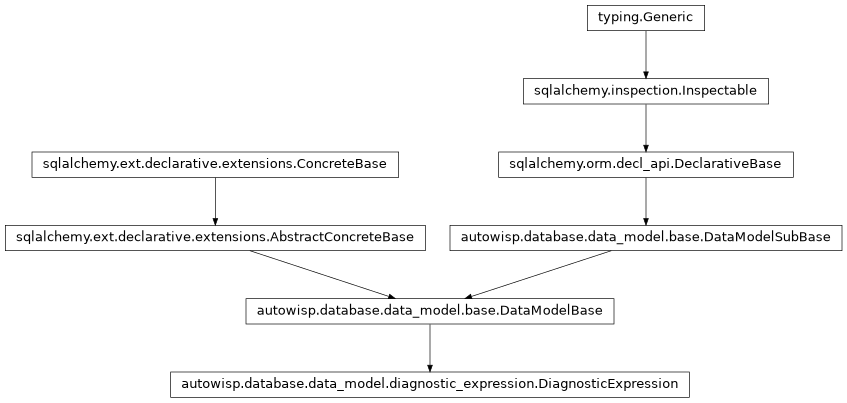

autowisp.diagnostics.expression_library module
Class Inheritance Diagram

Read and write the diagnostic expression library of a project.
The library lives in the project database, so that the pipeline, which evaluates exclusion rules over it, and the browser interface, which plots and edits it, see the same expressions for the same project. Everything here takes an open session on that database and knows nothing of Django.
Reading hands back the plain {name: expression} dictionary that
autowisp.diagnostics.expressions takes as an argument. What an
expression means, and what is wrong with a proposed one, is decided there;
this module only stores what it is given, keeping the references between
stored expressions intact when one of them is renamed.
- autowisp.diagnostics.expression_library.default_expressions = {'photref_merit': {'description': 'How good a single photometric reference an image makes: higher for a larger source extraction S (sharper stars) and a lower background, each ranked among the images a reference is being chosen for.', 'expression': '1.0 / ((1.0 - nanrank(s_center[0]))**2 + nanrank(bg_center[0])**2)'}}
What project creation puts in the library, in the form
write_expressions()takes.
- autowisp.diagnostics.expression_library.delete_expressions(names, db_session)[source]
Delete the named expressions.
Whether anything still references them is the caller’s question: a whole chain may be deleted together while one link of it may not be deleted alone, which only the caller knows.
- Parameters:
names – The expressions to delete. Names not in the library are ignored.
db_session – Open session on the project database.
- Returns:
None
- autowisp.diagnostics.expression_library.get_expression_descriptions(db_session)[source]
Return
{name: description}for the stored expressions.Kept apart from
get_expressions(), which everything that evaluates an expression consumes: what a quantity is for is of no interest to the evaluator.- Parameters:
db_session – Open session on the project database.
- Returns:
- Every stored expression’s description, the empty string
where one was left blank.
- Return type:
- autowisp.diagnostics.expression_library.get_expression_entries(names, db_session)[source]
Return the stored fields of the named expressions, for exporting.
- Parameters:
names – The expressions wanted. Names not in the library are skipped.
db_session – Open session on the project database.
- Returns:
{"name": ..., "expression": ..., "description": ...}per expression found, ordered by name.
- Return type:
- autowisp.diagnostics.expression_library.get_expressions(db_session)[source]
Return the whole library as
{name: expression}.The whole library, not the part the project has recorded diagnostics for: an expression naming a diagnostic nothing has recorded is not an error but a thing to leave unoffered, which callers that care establish by counting rows.
- Parameters:
db_session – Open session on the project database.
- Returns:
Every stored expression, keyed by name.
- Return type:
- autowisp.diagnostics.expression_library.photref_merit = 'photref_merit'
The expression the photometric reference selection page ranks candidates by, unless another is chosen there.
- autowisp.diagnostics.expression_library.store_expression(db_session, *, name, expression, description='', replacing=None)[source]
Add one expression, or replace a stored one, keeping references intact.
Replacing under a new name is a rename. Stored expressions referencing the old name are rewritten to reference the new one, since leaving them pointing at a name that no longer exists would break them, and refusing the rename would not help: a dependent cannot be pointed at the new name before it exists.
Nothing is validated here; the caller checks the expression against the library first (see
check_expression()), including that name does not clash with a stored expression other than the one being replaced.- Parameters:
db_session – Open session on the project database. Changes are flushed but not committed.
name (str) – The name to store the expression under.
expression (str) – The expression text.
description (str) – What the expression is for.
replacing (str or None) – The name of the stored expression this one replaces, or
Noneto add a new one. A name not in the library is treated asNone.
- Returns:
- The names of the stored expressions rewritten to follow a
rename, alphabetically; empty if nothing was renamed or nothing referenced the old name.
- Return type: